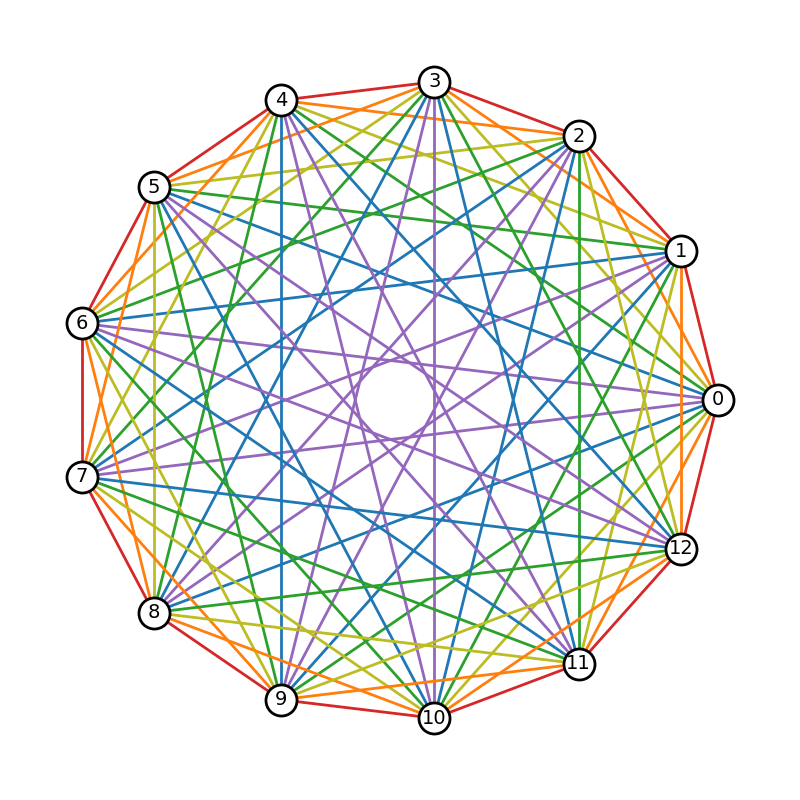

Note
Click here to download the full example code
Rainbow Coloring¶
Generate a complete graph with 13 nodes in a circular layout with the edges colored by node distance. The node distance is given by the minimum number of nodes traversed along an arc between any two nodes on the circle.
Such graphs are the subject of Ringel’s conjecture, which states: any complete
graph with 2n + 1 nodes can be tiled by any tree with n + 1 nodes
(i.e. copies of the tree can be placed over the complete graph such that each
edge in the complete graph is covered exactly once). The edge coloring is
helpful in determining how to place the tree copies.
References¶
https://www.quantamagazine.org/mathematicians-prove-ringels-graph-theory-conjecture-20200219/
import matplotlib.pyplot as plt
import networkx as nx
# A rainbow color mapping using matplotlib's tableau colors
node_dist_to_color = {
1: "tab:red",
2: "tab:orange",
3: "tab:olive",
4: "tab:green",
5: "tab:blue",
6: "tab:purple",
}
# Create a complete graph with an odd number of nodes
nnodes = 13
G = nx.complete_graph(nnodes)
# A graph with (2n + 1) nodes requires n colors for the edges
n = (nnodes - 1) // 2
ndist_iter = list(range(1, n + 1))
# Take advantage of circular symmetry in determining node distances
ndist_iter += ndist_iter[::-1]
def cycle(nlist, n):
return nlist[-n:] + nlist[:-n]
# Rotate nodes around the circle and assign colors for each edge based on
# node distance
nodes = list(G.nodes())
for i, nd in enumerate(ndist_iter):
for u, v in zip(nodes, cycle(nodes, i + 1)):
G[u][v]["color"] = node_dist_to_color[nd]
pos = nx.circular_layout(G)
# Create a figure with 1:1 aspect ratio to preserve the circle.
fig, ax = plt.subplots(figsize=(8, 8))
node_opts = {"node_size": 500, "node_color": "w", "edgecolors": "k", "linewidths": 2.0}
nx.draw_networkx_nodes(G, pos, **node_opts)
nx.draw_networkx_labels(G, pos, font_size=14)
# Extract color from edge data
edge_colors = [edgedata["color"] for _, _, edgedata in G.edges(data=True)]
nx.draw_networkx_edges(G, pos, width=2.0, edge_color=edge_colors)
ax.set_axis_off()
fig.tight_layout()
plt.show()
Total running time of the script: ( 0 minutes 0.203 seconds)